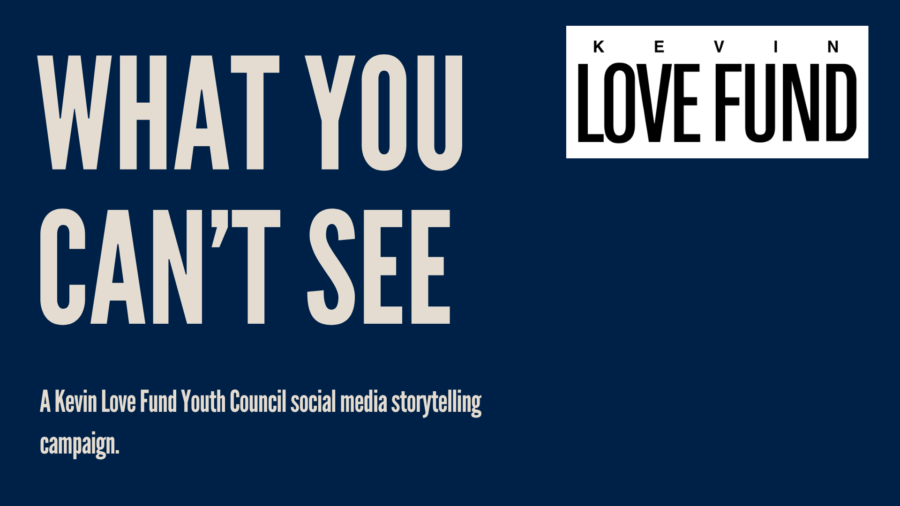
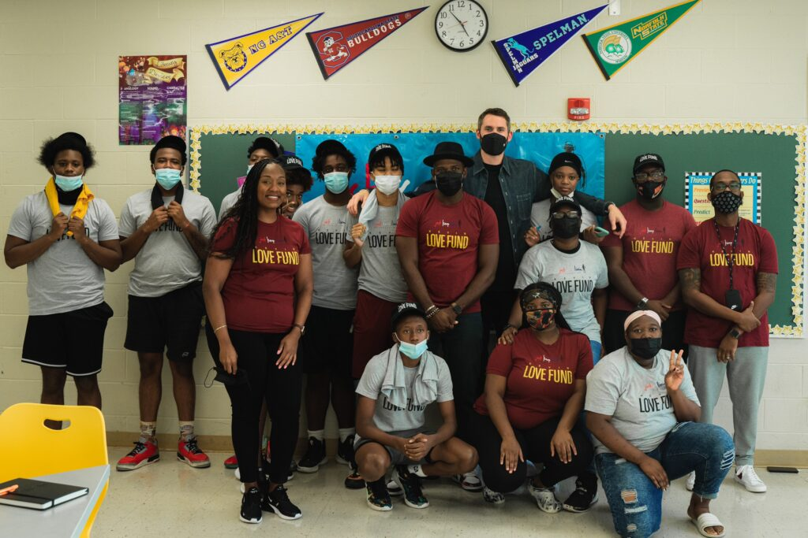

Mental health education
Curriculum helps students build emotional awareness, resilience, empathy, and self-compassion.
Kevin Love Fund × Broad Shoulders Initiative
Meet the Youth Council campaign Jonathan Wang helped create with Kevin Love Fund.

The campaign
Jonathan Wang, a Kevin Love Fund Youth Council member, helped create What You Can't See. Students share photos, artwork, and personal reflections about experiences others may miss. Their stories can help someone feel less alone.
Take part
Photo, art, or words.A handwritten message or personal reflection works too.
Share your storyPoway Unified MyPLAN sign-in is required. Public access and anonymity options could not be verified.
Kevin Love Fund Youth Council
Through the Youth Council, Jonathan helped support Kevin Love Fund mental health programming reaching:
The fund
Founded by NBA player Kevin Love, the fund promotes equity between mental and physical health through education, storytelling, advocacy, and resources.

Education, stories, support
Curriculum helps students build emotional awareness, resilience, empathy, and self-compassion.
Personal stories challenge stigma and make it easier to speak openly.
Practical tools support students, educators, athletes, and families.
Next steps
BSI hopes to explore bringing Kevin Love Fund educational curriculum to local elementary and middle schools in Poway Unified School District.
This is a future goal, not an existing school partnership.
More support